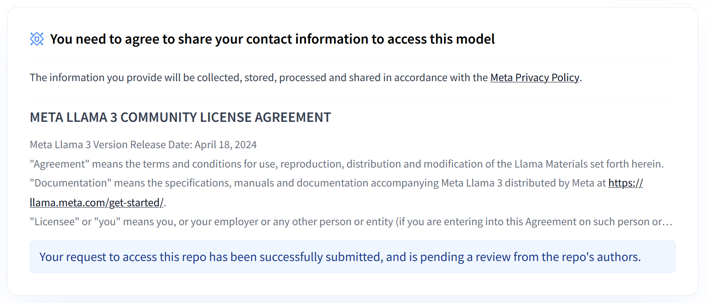
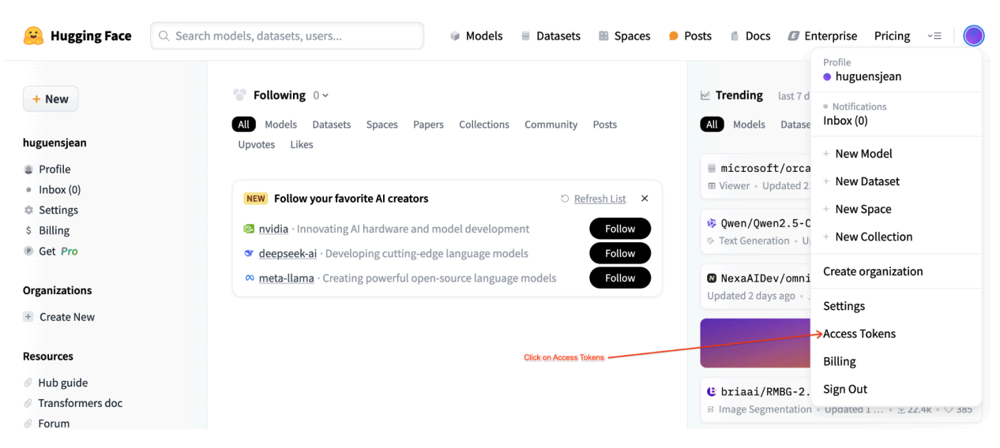
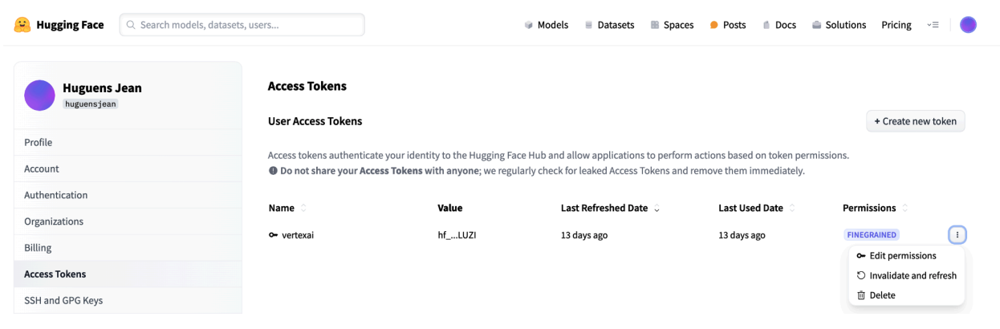
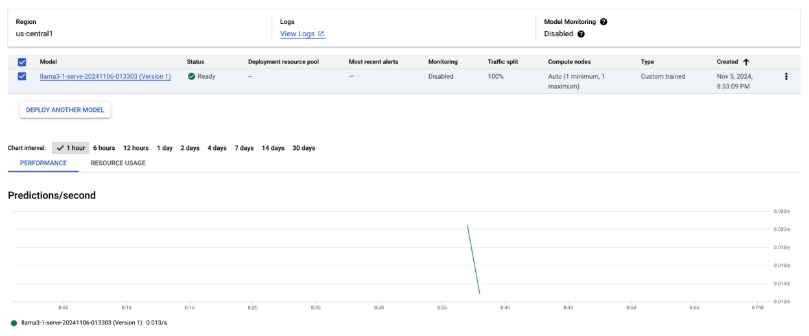
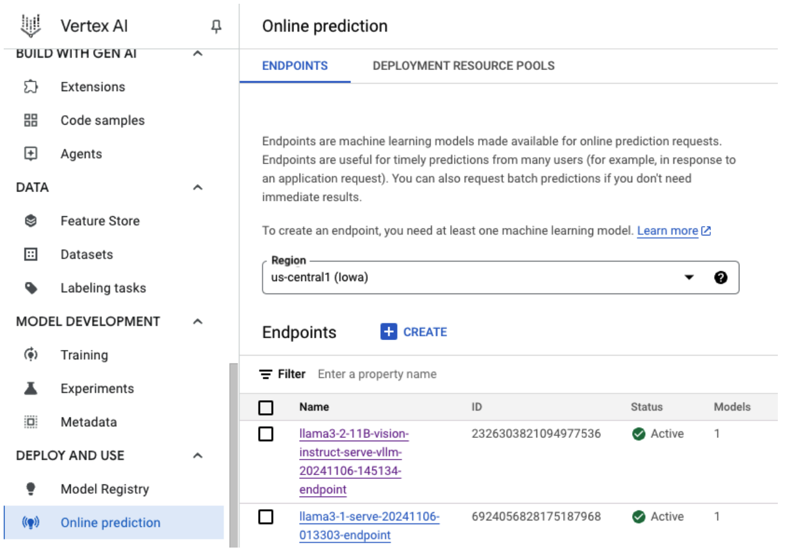
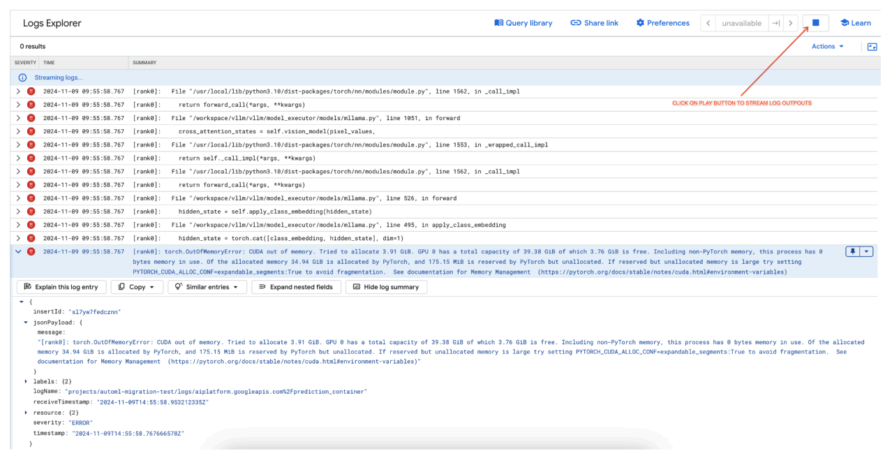
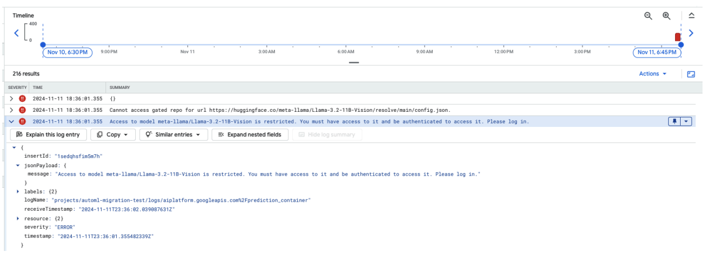
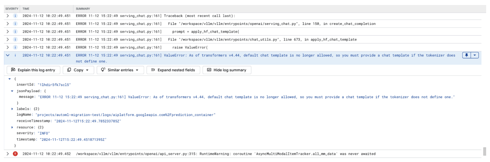
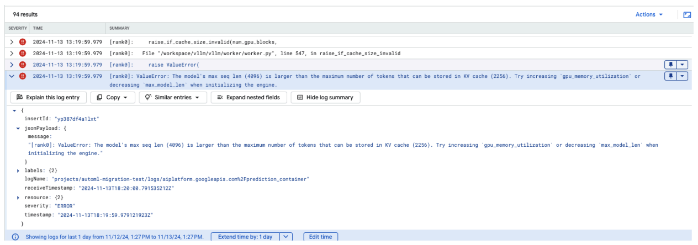

vLLM serving for text-only and multimodal language models on Cloud GPUs¶
This tutorial walks you through deploying and serving Llama 3.1 (text-only) and Llama 3.2 (multimodal) models using vLLM on Vertex AI. This guide is a companion to two notebooks: * Serve Llama 3.1 with vLLM: For deploying text-only Llama 3.1 models. * Serve Multimodal Llama 3.2 with vLLM: For deploying Llama 3.2 models that handle both text and image inputs.
By the end of this guide, you will learn how to do the following:
- Download prebuilt Llama models from Hugging Face with a vLLM container.
- Use vLLM to deploy these models on GPU instances within Vertex AI Model Garden.
- Serve models efficiently to handle inference requests at scale.
- Run inference on text-only and multimodal (text and image) requests.
- Clean up resources.
- Debug common deployment issues.
This document follows the high-level workflow below.
flowchart TD
A[Set up environment] --> B{Select model type}
B -- Text-only (Llama 3.1) --> C[Deploy Llama 3.1 model]
B -- Multimodal (Llama 3.2) --> D[Deploy Llama 3.2 model]
C --> E[Make predictions with Llama 3.1]
D --> F[Make predictions with Llama 3.2]
E --> G[Clean up resources]
F --> G
click A "#set-up-your-environment"
click B "#deploy-a-text-only-model-llama-3-1"
click C "#deploy-a-text-only-model-llama-3-1"
click D "#deploy-a-multimodal-model-llama-3-2"
click E "#make-predictions-with-the-llama-3-1-model"
click F "#make-predictions-with-the-llama-3-2-model"
click G "#clean-up-resources"Before you begin¶
Before you begin
Concepts
- vLLM: A high-performance serving library for large language models.
- PagedAttention: A memory management algorithm that allows for efficient handling of attention keys and values.
- Continuous Batching: A serving strategy that batches requests dynamically to improve GPU utilization.
- LoRA (Low-Rank Adaptation): A parameter-efficient fine-tuning technique that adapts pre-trained models to new tasks with minimal changes.
- Speculative Decoding: An optimization technique that uses a smaller, faster model to generate draft tokens, which are then verified by the larger model to accelerate inference.
Enable billing
Make sure that billing is enabled for your Google Cloud project. For more information, see Enable, disable, or change billing for a project.
Check GPU quotas
To run predictions using high-performance GPUs (NVIDIA A100 80GB or H100 80GB), make sure that you have sufficient quotas for these GPUs in your selected region.
| Machine Type | Accelerator Type | Recommended Regions |
|---|---|---|
| a2-ultragpu-1g | 1 NVIDIA_A100_80GB | us-central1, us-east4, europe-west4, asia-southeast1 |
| a3-highgpu-8g | 8 NVIDIA_H100_80GB | us-central1, us-west1, europe-west4, asia-southeast1 |
Set up your Google Cloud project
Run the following code to set up your Google Cloud environment. This script installs necessary Python libraries and configures access to Google Cloud resources.
Troubleshooting
If you encounter issues with code snippets or setup, refer to the Troubleshooting Guide.
The following actions are performed:
- Installation: Upgrades the
google-cloud-aiplatformlibrary and clones a repository containing utility functions. - Environment Setup: Defines variables for your Google Cloud Project ID, region, and a Cloud Storage bucket for storing model artifacts.
- API activation: Enables the Vertex AI and Compute Engine APIs, which are essential for deploying and managing AI models.
- Bucket configuration: Creates a new Cloud Storage bucket or verifies that an existing bucket is in the correct region.
- Vertex AI initialization: Initializes the Vertex AI client library with your project, location, and staging bucket settings.
- Service account setup: Identifies the default service account for running Vertex AI jobs and grants it the necessary permissions.
BUCKET_URI = "gs://"
REGION = ""
! pip3 install --upgrade --quiet 'google-cloud-aiplatform>=1.64.0'
! git clone https://github.com/GoogleCloudPlatform/vertex-ai-samples.git
import datetime
import importlib
import os
import uuid
from typing import Tuple
import requests
from google.cloud import aiplatform
common_util = importlib.import_module(
"vertex-ai-samples.community-content.vertex_model_garden.model_oss.notebook_util.common_util"
)
models, endpoints = {}, {}
PROJECT_ID = os.environ["GOOGLE_CLOUD_PROJECT"]
if not REGION:
REGION = os.environ["GOOGLE_CLOUD_REGION"]
print("Enabling Vertex AI API and Compute Engine API.")
! gcloud services enable aiplatform.googleapis.com compute.googleapis.com
now = datetime.datetime.now().strftime("%Y%m%d%H%M%S")
BUCKET_NAME = "/".join(BUCKET_URI.split("/")[:3])
if BUCKET_URI is None or BUCKET_URI.strip() == "" or BUCKET_URI == "gs://":
BUCKET_URI = f"gs://{PROJECT_ID}-tmp-{now}-{str(uuid.uuid4())[:4]}"
BUCKET_NAME = "/".join(BUCKET_URI.split("/")[:3])
! gsutil mb -l {REGION} {BUCKET_URI}
else:
assert BUCKET_URI.startswith("gs://"), "BUCKET_URI must start with `gs://`."
shell_output = ! gsutil ls -Lb {BUCKET_NAME} | grep "Location constraint:" | sed "s/Location constraint://"
bucket_region = shell_output[0].strip().lower()
if bucket_region != REGION:
raise ValueError(
"Bucket region %s is different from notebook region %s"
% (bucket_region, REGION)
)
print(f"Using this Bucket: {BUCKET_URI}")
STAGING_BUCKET = os.path.join(BUCKET_URI, "temporal")
MODEL_BUCKET = os.path.join(BUCKET_URI, "llama3_1")
print("Initializing Vertex AI API.")
aiplatform.init(project=PROJECT_ID, location=REGION, staging_bucket=STAGING_BUCKET)
shell_output = ! gcloud projects describe $PROJECT_ID
project_number = shell_output[-1].split(":")[1].strip().replace("'", "")
SERVICE_ACCOUNT = "your service account email"
print("Using this default Service Account:", SERVICE_ACCOUNT)
! gsutil iam ch serviceAccount:{SERVICE_ACCOUNT}:roles/storage.admin $BUCKET_NAME
! gcloud config set project $PROJECT_ID
! gcloud projects add-iam-policy-binding --no-user-output-enabled {PROJECT_ID} --member=serviceAccount:{SERVICE_ACCOUNT} --role="roles/storage.admin"
! gcloud projects add-iam-policy-binding --no-user-output-enabled {PROJECT_ID} --member=serviceAccount:{SERVICE_ACCOUNT} --role="roles/aiplatform.user"
Get a Hugging Face token
This tutorial requires a read-access token from the Hugging Face Hub.

-
- Navigate to your Hugging Face account settings.
- Create a new token, assign it the Read role, and save the token securely.
Generate a read access token:

Navigate to the Access Tokens page in your Hugging Face settings. -
Use the token:
- Use the generated token to authenticate and access public or private repositories as needed for the tutorial.

Create a new access token with the "Read" role.
When you set your token as an environment variable during deployment, it remains private to your project. For more information, see Hugging Face Access Tokens Best Practices.
vLLM on Vertex AI¶
vLLM is an open-source library for fast and efficient large language model (LLM) inference and serving.
| Feature | Description |
|---|---|
| PagedAttention | An optimized attention mechanism that efficiently manages memory during inference. Supports high-throughput text generation by dynamically allocating memory resources, enabling scalability for multiple concurrent requests. |
| Continuous batching | Consolidates multiple input requests into a single batch for parallel processing, maximizing GPU utilization and throughput. |
| Token streaming | Enables real-time token-by-token output during text generation. Ideal for applications that require low latency, such as chatbots or interactive AI systems. |
| Model compatibility | Supports a wide range of pre-trained models across popular frameworks like Hugging Face Transformers. Makes it easier to integrate and experiment with different LLMs. |
| Multi-GPU & multi-host | Enables efficient model serving by distributing the workload across multiple GPUs within a single machine and across multiple machines in a cluster, significantly increasing throughput and scalability. |
| Efficient deployment | Offers seamless integration with APIs, such as OpenAI chat completions, making deployment straightforward for production use cases. |
| Seamless integration with Hugging Face models | vLLM is compatible with Hugging Face model artifacts format and supports loading from HF, making it straightforward to deploy Llama models alongside other popular models like Gemma, Phi, and Qwen in an optimized setting. |
| Community-driven open-source project | vLLM is open-source and encourages community contributions, promoting continuous improvement in LLM serving efficiency. |
Google Vertex AI vLLM Customizations¶
The vLLM implementation in Vertex AI Model Garden is a customized and optimized version specifically tailored for performance, reliability, and seamless integration within Google Cloud.
- Performance optimizations:
- Parallel downloading from Cloud Storage: Significantly accelerates model loading and deployment times by enabling parallel data retrieval from Cloud Storage, reducing latency and improving startup speed.
- Feature enhancements:
- Dynamic LoRA with enhanced caching and Cloud Storage support: Extends dynamic LoRA capabilities with local disk caching mechanisms and robust error handling, alongside support for loading LoRA weights directly from Cloud Storage paths and signed URLs. This simplifies management and deployment of customized models.
- Llama 3.1/3.2 function calling parsing: Implements specialized parsing for Llama 3.1/3.2 function calling, improving the robustness in parsing.
- Host memory prefix caching: The external vLLM only supports GPU memory prefix caching.
- Speculative decoding: This is an existing vLLM feature, but Vertex AI ran experiments to find high-performing model setups.
- Vertex AI ecosystem integration:
- Vertex AI prediction input/output format support: Ensures seamless compatibility with Vertex AI prediction input and output formats, simplifying data handling and integration with other Vertex AI services.
- Vertex Environment variable awareness: Respects and leverages Vertex AI environment variables (
AIP_*) for configuration and resource management, streamlining deployment and ensuring consistent behavior within the Vertex AI environment. - Enhanced error handling and robustness: Implements comprehensive error handling, input/output validation, and server termination mechanisms to ensure stability, reliability, and seamless operation within the managed Vertex AI environment.
- Nginx server for capability: Integrates an Nginx server on top of the vLLM server, facilitating the deployment of multiple replicas and enhancing scalability and high availability of the serving infrastructure.
Additional benefits of vLLM¶
- Benchmark performance: vLLM offers competitive performance when compared to other serving systems like Hugging Face text-generation-inference and NVIDIA's FasterTransformer in terms of throughput and latency.
- Ease of use: The library provides a straightforward API for integration with existing workflows, allowing you to deploy both Llama 3.1 and 3.2 models with minimal setup.
- Advanced features: vLLM supports streaming outputs (generating responses token-by-token) and efficiently handles variable-length prompts, enhancing interactivity and responsiveness in applications.
For an overview of the vLLM system, see the paper.
Supported Models¶
vLLM supports a broad selection of models. The following table offers a selection of these models. For a comprehensive list, see the official vLLM supported models list.
| Category | Models |
|---|---|
| Meta AI | Llama 3.3, Llama 3.2, Llama 3.1, Llama 3, Llama 2, Code Llama |
| Mistral AI | Mistral 7B, Mixtral 8x7B, Mixtral 8x22B, and their variants (Instruct, Chat), Mistral-tiny, Mistral-small, Mistral-medium |
| DeepSeek AI | DeepSeek-V3, DeepSeek-R1, DeepSeek-R1-Distill-Qwen-1.5B, DeepSeek-R1-Distill-Qwen-7B, DeepSeek-R1-Distill-Llama-8B, DeepSeek-R1-Distill-Qwen-14B, DeepSeek-R1-Distill-Qwen-32B, DeepSeek-R1-Distill-Llama-70B, Deepseek-vl2-tiny, Deepseek-vl2-small, Deepseek-vl2 |
| MosaicML | MPT (7B, 30B) and variants (Instruct, Chat), MPT-7B-StoryWriter-65k |
| OpenAI | GPT-2, GPT-3, GPT-4, GPT-NeoX |
| Together AI | RedPajama, Pythia |
| Stability AI | StableLM (3B, 7B), StableLM-Alpha-3B, StableLM-Base-Alpha-7B, StableLM-Instruct-Alpha-7B |
| TII (Technology Innovation Institute) | Falcon 7B, Falcon 40B and variants (Instruct, Chat), Falcon-RW-1B, Falcon-RW-7B |
| BigScience | BLOOM, BLOOMZ |
| FLAN-T5, UL2, Gemma (2B, 7B), PaLM 2, | |
| Salesforce | CodeT5, CodeT5+ |
| LightOn | Persimmon-8B-base, Persimmon-8B-chat |
| EleutherAI | GPT-Neo, Pythia |
| AI21 Labs | Jamba |
| Cerebras | Cerebras-GPT |
| Intel | Intel-NeuralChat-7B |
| Other Prominent Models | StarCoder, OPT, Baichuan, Aquila, Qwen, InternLM, XGen, OpenLLaMA, Phi-2, Yi, OpenCodeInterpreter, Nous-Hermes, Gemma-it, Mistral-Instruct-v0.2-7B-Zeus, |
Overview of Meta Llama 3.1 and 3.2 models¶
Meta's Llama 3.1 and 3.2 models are designed for high-quality text generation. For more information, see the Llama overview page.
- Llama 3.1 (Text-only): This collection includes pre-trained and instruction-tuned generative models (text in, text out) that excel at multilingual dialogue, summarization, and agentic retrieval.
- Llama 3.2 (Multimodal): This collection includes pre-trained and instruction-tuned models that can process both text and image inputs (text + images in, text out). These models are also optimized for multilingual dialogue and perform well in retrieval and summarization tasks.
Deploy a text-only model (Llama 3.1)¶
Deploy a text-only Llama 3.1 model with vLLM
For production-level deployment, vLLM provides an efficient serving solution that optimizes memory usage, lowers latency, and increases throughput.
Note
This example recommends using A100 80G or H100 GPUs for optimal serving efficiency and performance.
1. Choose a model to deploy
Select the Llama 3.1 model variant to deploy.
base_model_name = "Meta-Llama-3.1-8B" # @param ["Meta-Llama-3.1-8B", "Meta-Llama-3.1-8B-Instruct", "Meta-Llama-3.1-70B", "Meta-Llama-3.1-70B-Instruct", "Meta-Llama-3.1-405B-FP8", "Meta-Llama-3.1-405B-Instruct-FP8"]
hf_model_id = "meta-Llama/" + base_model_name
2. Define the deployment function
The following function uploads the model to Vertex AI, configures deployment settings, and deploys it to an endpoint using vLLM. It automatically selects the appropriate GPU and machine type based on the model size and checks for quota availability.
- Docker Image: The deployment uses a prebuilt vLLM Docker image for efficient serving.
- Configuration: You can configure memory utilization, model length, and other vLLM settings. For more information on supported arguments, see the vLLM documentation.
- Environment Variables: Sets environment variables for authentication and deployment source.
def deploy_model_vllm(
model_name: str,
model_id: str,
service_account: str,
base_model_id: str = None,
machine_type: str = "g2-standard-8",
accelerator_type: str = "NVIDIA_L4",
accelerator_count: int = 1,
gpu_memory_utilization: float = 0.9,
max_model_len: int = 4096,
dtype: str = "auto",
enable_trust_remote_code: bool = False,
enforce_eager: bool = False,
enable_lora: bool = False,
max_loras: int = 1,
max_cpu_loras: int = 8,
use_dedicated_endpoint: bool = False,
max_num_seqs: int = 256,
) -> Tuple[aiplatform.Model, aiplatform.Endpoint]:
"""Deploys trained models with vLLM into Vertex AI."""
endpoint = aiplatform.Endpoint.create(
display_name=f"{model_name}-endpoint",
dedicated_endpoint_enabled=use_dedicated_endpoint,
)
if "8b" in base_model_name.lower():
accelerator_type = "NVIDIA_L4"
machine_type = "g2-standard-12"
accelerator_count = 1
elif "70b" in base_model_name.lower():
accelerator_type = "NVIDIA_L4"
machine_type = "g2-standard-96"
accelerator_count = 8
elif "405b" in base_model_name.lower():
accelerator_type = "NVIDIA_H100_80GB"
machine_type = "a3-highgpu-8g"
accelerator_count = 8
else:
raise ValueError(f"Recommended GPU setting not found for: {accelerator_type} and {base_model_name}.")
common_util.check_quota(
project_id=PROJECT_ID,
region=REGION,
accelerator_type=accelerator_type,
accelerator_count=accelerator_count,
is_for_training=False,
)
vllm_args = [
"python", "-m", "vllm.entrypoints.api_server",
"--host=0.0.0.0",
"--port=8080",
f"--model={model_id}",
f"--tensor-parallel-size={accelerator_count}",
"--swap-space=16",
f"--gpu-memory-utilization={gpu_memory_utilization}",
f"--max-model-len={max_model_len}", f"--dtype={dtype}",
f"--max-loras={max_loras}", f"--max-cpu-loras={max_cpu_loras}",
f"--max-num-seqs={max_num_seqs}", "--disable-log-stats"
]
if enable_trust_remote_code:
vllm_args.append("--trust-remote-code")
if enforce_eager:
vllm_args.append("--enforce-eager")
if enable_lora:
vllm_args.append("--enable-lora")
env_vars = {
"MODEL_ID": model_id,
"DEPLOY_SOURCE": "notebook",
"HF_TOKEN": HF_TOKEN
}
model = aiplatform.Model.upload(
display_name=model_name,
serving_container_image_uri=VLLM_DOCKER_URI,
serving_container_args=vllm_args,
serving_container_ports=[8080],
serving_container_predict_route="/generate",
serving_container_health_route="/ping",
serving_container_environment_variables=env_vars,
serving_container_shared_memory_size_mb=(16 * 1024),
serving_container_deployment_timeout=7200,
)
print(f"Deploying {model_name} on {machine_type} with {accelerator_count} {accelerator_type} GPU(s).")
model.deploy(
endpoint=endpoint,
machine_type=machine_type,
accelerator_type=accelerator_type,
accelerator_count=accelerator_count,
deploy_request_timeout=1800,
service_account=service_account,
)
print("endpoint_name:", endpoint.name)
return model, endpoint
3. Execute deployment
Run the deployment function with the selected model and configuration. This step deploys the model and returns the model and endpoint instances. Depending on model size, deployment can take up to an hour.
HF_TOKEN = "" # Paste your Hugging Face token here
use_dedicated_endpoint = False
VLLM_DOCKER_URI = "us-docker.pkg.dev/vertex-ai/vertex-vision-model-garden-dockers/pytorch-vllm-serve:20241001_0916_RC00"
model_name = common_util.get_job_name_with_datetime(prefix=f"{base_model_name}-serve-vllm")
gpu_memory_utilization = 0.9
max_model_len = 4096
max_loras = 1
models["vllm_gpu"], endpoints["vllm_gpu"] = deploy_model_vllm(
model_name=common_util.get_job_name_with_datetime(prefix=f"{base_model_name}-serve"),
model_id=hf_model_id,
service_account=SERVICE_ACCOUNT,
machine_type=machine_type,
accelerator_type=accelerator_type,
accelerator_count=accelerator_count,
gpu_memory_utilization=gpu_memory_utilization,
max_model_len=max_model_len,
max_loras=max_loras,
enforce_eager=True,
enable_lora=True,
use_dedicated_endpoint=use_dedicated_endpoint,
)
You can check the deployment progress in the Vertex AI console.

Make predictions with the Llama 3.1 model¶
Make predictions with the Llama 3.1 model
After deploying the Llama 3.1 model, you can send text prompts to the endpoint to get predictions.
1. Define your prompt and parameters
Set up your text prompt and sampling parameters to guide the model's response.
prompt: The input text for the model.max_tokens: The maximum number of tokens in the generated output.temperature: Controls the randomness of predictions. Higher values (e.g., 1.0) increase diversity.top_p: Restricts sampling to the top cumulative probability.top_k: Restricts sampling to the top k most likely tokens.raw_response: IfTrue, returns the raw model output.lora_id(optional): Path to LoRA weight files to apply Low-Rank Adaptation. This requires--enable-lorato be set during deployment.
prompt = "What is a car?"
max_tokens = 50
temperature = 1.0
top_p = 1.0
top_k = 1
raw_response = False
lora_id = ""
2. Send the prediction request
Send the prediction request to the deployed Vertex AI endpoint.
instances=[
{
"prompt": prompt,
"max_tokens": max_tokens,
"temperature": temperature,
"top_p": top_p,
"top_k": top_k,
"raw_response": raw_response,
"lora_id": lora_id,
}
]
response = endpoints["vllm_gpu"].predict(
instances=instances, use_dedicated_endpoint=use_dedicated_endpoint
)
for prediction in response.predictions:
print(prediction)
Example output
Human: What is a car?
Assistant: A car, or a motor car, is a road-connected human-transportation system
used to move people or goods from one place to another.
Tip
If you encounter timeout issues like ServiceUnavailable: 503, try reducing the max_tokens parameter.
Deploy a multimodal model (Llama 3.2)¶
Deploy a multimodal Llama 3.2 model with vLLM
This section walks you through deploying a prebuilt Llama 3.2 model, which supports both text and image inputs. Deployment time can take up to an hour, depending on the model size.
1. Choose a model to deploy
Specify the Llama 3.2 model variant you want to deploy.
base_model_name = "Llama-3.2-11B-Vision" # @param ["Llama-3.2-1B", "Llama-3.2-1B-Instruct", "Llama-3.2-3B", "Llama-3.2-3B-Instruct", "Llama-3.2-11B-Vision", "Llama-3.2-11B-Vision-Instruct", "Llama-3.2-90B-Vision", "Llama-3.2-90B-Vision-Instruct"]
hf_model_id = "meta-Llama/" + base_model_name
2. Configure hardware and check quota
Select the appropriate hardware for your model size and verify that you have sufficient GPU quota.
- 1B and 3B models: Use NVIDIA L4 GPUs.
- 11B models: Use NVIDIA A100 GPUs.
- 90B models: Use NVIDIA H100 GPUs.
if "3.2-1B" in base_model_name or "3.2-3B" in base_model_name:
accelerator_type = "NVIDIA_L4"
machine_type = "g2-standard-8"
accelerator_count = 1
elif "3.2-11B" in base_model_name:
accelerator_type = "NVIDIA_TESLA_A100"
machine_type = "a2-highgpu-1g"
accelerator_count = 1
elif "3.2-90B" in base_model_name:
accelerator_type = "NVIDIA_H100_80GB"
machine_type = "a3-highgpu-8g"
accelerator_count = 8
else:
raise ValueError(f"Recommended GPU setting not found for: {base_model_name}.")
common_util.check_quota(
project_id=PROJECT_ID,
region=REGION,
accelerator_type=accelerator_type,
accelerator_count=accelerator_count,
is_for_training=False,
)
3. Define the deployment function
The following function handles the deployment of the Llama 3.2 model on Vertex AI.
def deploy_model_vllm(
model_name: str,
model_id: str,
service_account: str,
base_model_id: str = None,
machine_type: str = "g2-standard-8",
accelerator_type: str = "NVIDIA_L4",
accelerator_count: int = 1,
gpu_memory_utilization: float = 0.9,
max_model_len: int = 4096,
dtype: str = "auto",
enable_trust_remote_code: bool = False,
enforce_eager: bool = False,
enable_lora: bool = False,
max_loras: int = 1,
max_cpu_loras: int = 8,
use_dedicated_endpoint: bool = False,
max_num_seqs: int = 12,
model_type: str = None,
) -> Tuple[aiplatform.Model, aiplatform.Endpoint]:
"""Deploys trained models with vLLM into Vertex AI."""
endpoint = aiplatform.Endpoint.create(
display_name=f"{model_name}-endpoint",
dedicated_endpoint_enabled=use_dedicated_endpoint,
)
if not base_model_id:
base_model_id = model_id
vllm_args = [
"python",
"-m",
"vllm.entrypoints.api_server",
"--host=0.0.0.0",
"--port=8080",
f"--model={model_id}",
f"--tensor-parallel-size={accelerator_count}",
"--swap-space=16",
f"--gpu-memory-utilization={gpu_memory_utilization}",
f"--max-model-len={max_model_len}",
f"--dtype={dtype}",
f"--max-loras={max_loras}",
f"--max-cpu-loras={max_cpu_loras}",
f"--max-num-seqs={max_num_seqs}",
"--disable-log-stats",
]
if enable_trust_remote_code:
vllm_args.append("--trust-remote-code")
if enforce_eager:
vllm_args.append("--enforce-eager")
if enable_lora:
vllm_args.append("--enable-lora")
if model_type:
vllm_args.append(f"--model-type={model_type}")
env_vars = {
"MODEL_ID": base_model_id,
"DEPLOY_SOURCE": "notebook",
}
# HF_TOKEN is not a compulsory field and may not be defined.
try:
if HF_TOKEN:
env_vars["HF_TOKEN"] = HF_TOKEN
except NameError:
pass
model = aiplatform.Model.upload(
display_name=model_name,
serving_container_image_uri=VLLM_DOCKER_URI,
serving_container_args=vllm_args,
serving_container_ports=[8080],
serving_container_predict_route="/generate",
serving_container_health_route="/ping",
serving_container_environment_variables=env_vars,
serving_container_shared_memory_size_mb=(16 * 1024),
serving_container_deployment_timeout=7200,
)
print(f"Deploying {model_name} on {machine_type} with {accelerator_count} {accelerator_type} GPU(s).")
model.deploy(
endpoint=endpoint,
machine_type=machine_type,
accelerator_type=accelerator_type,
accelerator_count=accelerator_count,
deploy_request_timeout=1800,
service_account=service_account,
)
print("endpoint_name:", endpoint.name)
return model, endpoint
4. Execute deployment
Run the deployment function with the configured model and settings.
model_name = common_util.get_job_name_with_datetime(prefix=f"{base_model_name}-serve-vllm")
models["vllm_gpu"], endpoints["vllm_gpu"] = deploy_model_vllm(
model_name=model_name,
model_id=hf_model_id,
base_model_id=hf_model_id,
service_account=SERVICE_ACCOUNT,
machine_type=machine_type,
accelerator_type=accelerator_type,
accelerator_count=accelerator_count,
gpu_memory_utilization=gpu_memory_utilization,
max_model_len=max_model_len,
enforce_eager=True,
use_dedicated_endpoint=use_dedicated_endpoint,
max_num_seqs=max_num_seqs,
)

Make predictions with the Llama 3.2 model¶
You can interact with the deployed Llama 3.2 Vision model using either the default Vertex AI prediction route or the OpenAI Chat Completions API format.
This method uses the standard Vertex AI prediction endpoint to send a visual prompt combined with text.
1. Define your prompt and parameters
Provide an image URL and a text prompt. The model will process both to generate a response.

image_url = "https://images.pexels.com/photos/1254140/pexels-photo-1254140.jpeg"
raw_prompt = "This is a picture of"
# Reference prompt formatting guidelines here: https://llama.meta.com/docs/model-cards-and-prompt-formats/llama3_2/#base-model-prompt-format
prompt = f"<|begin_of_text|><|image|>{raw_prompt}"
2. Configure prediction parameters
Adjust the following parameters to control the model's response.
3. Prepare and send the prediction request
Set up the prediction request with the image URL, prompt, and other parameters, then send it to your Vertex AI endpoint.
instances = [
{
"prompt": prompt,
"multi_modal_data": {"image": image_url},
"max_tokens": max_tokens,
"temperature": temperature,
"top_p": top_p,
},
]
response = endpoints["vllm_gpu"].predict(instances=instances)
for raw_prediction in response.predictions:
prediction = raw_prediction.split("Output:")
print(prediction[1])
Tip
If you encounter a timeout issue (e.g., ServiceUnavailable: 503), try reducing the max_tokens value.
This method uses the OpenAI Chat Completions API format to interact with the Llama 3.2 Vision Instruct model, allowing for multimodal chat interactions.
1. Deploy the Llama 3.2 Vision Instruct model
First, deploy the Llama-3.2-11B-Vision-Instruct model. This model is specifically tuned for chat-like interactions.
base_model_name = "Llama-3.2-11B-Vision-Instruct"
hf_model_id = f"meta-llama/{base_model_name}"
model_name = common_util.get_job_name_with_datetime(prefix=f"{base_model_name}-serve-vllm")
model, endpoint = deploy_model_vllm(
model_name=model_name,
model_id=hf_model_id,
base_model_id=hf_model_id,
service_account=SERVICE_ACCOUNT,
machine_type="a2-highgpu-1g",
accelerator_type="NVIDIA_TESLA_A100",
accelerator_count=1,
gpu_memory_utilization=0.9,
max_model_len=4096,
enforce_eager=True,
max_num_seqs=12,
)
2. Configure endpoint and install libraries
Set up the endpoint resource name and install the necessary Python libraries for OpenAI and Google authentication.
ENDPOINT_RESOURCE_NAME = "projects/{}/locations/{}/endpoints/{}".format(
PROJECT_ID, REGION, endpoint.name
)
!pip install -qU openai google-auth requests
3. Define input parameters
Set up your image URL and text prompt. Adjust max_tokens and temperature to control the response.
user_image = "https://images.freeimages.com/images/large-previews/ab3/puppy-2-1404644.jpg"
user_message = "Describe this image?"
max_tokens = 50
temperature = 1.0
4. Set up authentication and send the request
Authenticate and set the base URL for the API request. Then, use the OpenAI client to send the chat completion request to your Vertex AI endpoint.
import google.auth
import openai
creds, project = google.auth.default()
auth_req = google.auth.transport.requests.Request()
creds.refresh(auth_req)
BASE_URL = (
f"https://{REGION}-aiplatform.googleapis.com/v1beta1/{ENDPOINT_RESOURCE_NAME}"
)
try:
if use_dedicated_endpoint:
BASE_URL = f"https://{DEDICATED_ENDPOINT_DNS}/v1beta1/{ENDPOINT_RESOURCE_NAME}"
except NameError:
pass
client = openai.OpenAI(base_url=BASE_URL, api_key=creds.token)
model_response = client.chat.completions.create(
model="",
messages=[
{
"role": "user",
"content": [
{"type": "image_url", "image_url": {"url": user_image}},
{"type": "text", "text": user_message},
],
}
],
temperature=temperature,
max_tokens=max_tokens,
)
print(model_response)
5. (Optional) Reconnect to an existing endpoint
To reuse a previously created endpoint, specify its name to reconnect.
Clean up resources¶
Clean up resources
To avoid ongoing charges, delete the deployed models, endpoints, and the Cloud Storage bucket.
1. Delete endpoints and models
The following code undeploys each model and deletes the associated endpoints and models.
# Undeploy model and delete endpoint
for endpoint in endpoints.values():
endpoint.delete(force=True)
# Delete models
for model in models.values():
model.delete()
2. (Optional) Delete the Cloud Storage bucket
If you created a new Cloud Storage bucket for this tutorial, you can delete it.
Troubleshooting¶
This section provides guidance on resolving common issues encountered during vLLM model deployment and inference on Vertex AI.
To identify the root cause of an issue, first check the logs: 1. Go to the Vertex AI Endpoints page. 2. Click the name of your endpoint. 3. Select the Logs tab or click View logs to open Cloud Logging.
CUDA Out of Memory (OOM) during deployment
Issue: A torch.OutOfMemoryError occurs when the model's memory usage exceeds the available GPU capacity. This often happens if the max_num_seqs parameter is set too high for the model and GPU type. For example, a multimodal model like Llama-3.2-11B-Vision-Instruct consumes more memory per sequence than a text-only model and may fail with max_num_seqs=256 on an NVIDIA L4 GPU.

Resolution: Reduce the max_num_seqs value. For the Llama-3.2-11B-Vision-Instruct model on an L4 GPU, a value of 12 is more appropriate. You can also resolve this by using a larger GPU or multiple GPUs (and setting tensor-parallel-size accordingly).
Hugging Face token required
Issue: The deployment fails with an error message like Cannot access gated repository. This occurs when the model is gated on Hugging Face and requires authentication.

Resolution: Ensure you have accepted the model's terms on Hugging Face and provided a valid read-access token in your deployment configuration (e.g., in the HF_TOKEN environment variable).
Chat template required
Issue: The deployment fails with a ValueError indicating that a chat template is missing. Newer versions of the transformers library require an explicit chat template if the tokenizer does not define one.

Resolution: Provide a chat template during deployment using the --chat-template input argument. You can find sample templates in the vLLM examples repository.
Model max sequence length exceeded
Issue: The deployment fails with a ValueError stating: The model's max seq len (4096) is larger than the maximum number of tokens that can be stored in KV cache (2256). This means the specified maximum model length exceeds the GPU's memory capacity for the KV cache.

Resolution: Decrease the max_model_len parameter to a value that fits within the available KV cache (e.g., 2048 in this case). Alternatively, use a larger GPU or increase the number of GPUs.